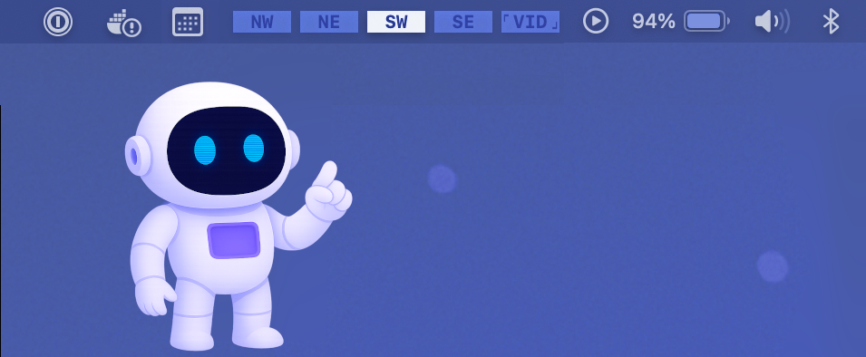

Spaceman shows your macOS Spaces (Virtual Desktops) in the menu bar, so you can see which space you're on relative to all your other spaces. It supports multiple displays and lets you name spaces to organize your workflow.
About This Fork
This app is based on the original Spaceman application created by Sasindu Jayasinghe. We appreciate this useful app and all the foundational work that went into it. You can visit the original project page and original repository.
Since the original repository is no longer actively maintained, this fork continues development with bug fixes and new features.
-
Customizable
Spaceman can be customized with 5 different icon styles in 5 different sizes. Have a minimal view of your space or have them named.
Numbers Names Numbers and Names
Numbers and Names  Dual Rows
Dual Rows
-
Navigational
Switch between spaces with a simple click on the menu bar icon.
-
Native
Compiled to a universal binary to support both Apple Silicon and Intel Macs.
-
Open-source
Fully open source under the MIT license. Contributions and pull requests are welcome.